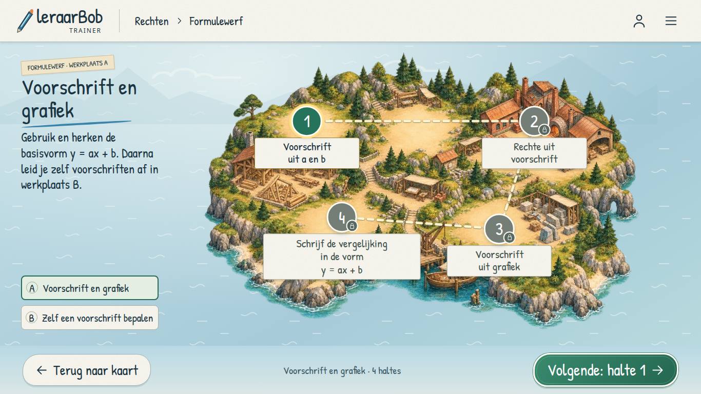
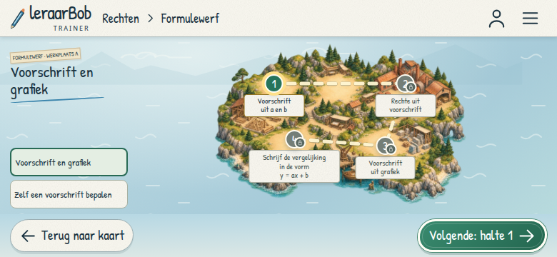
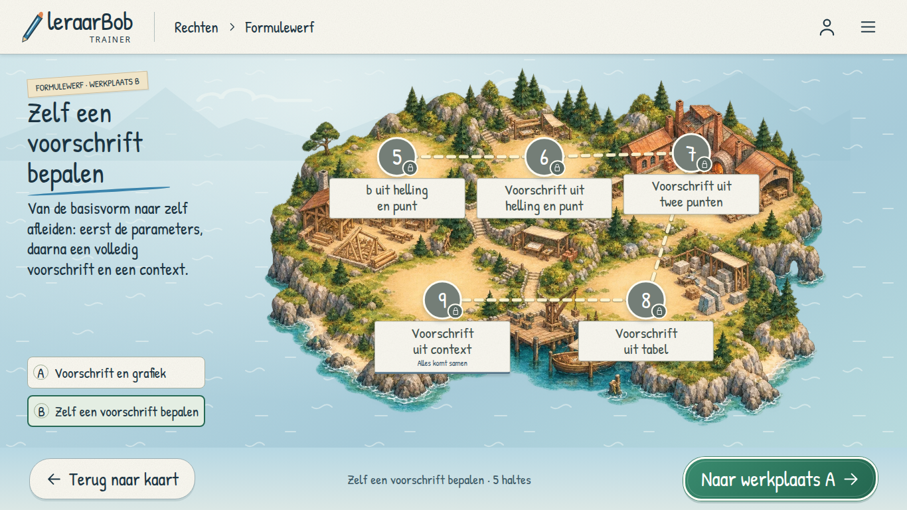
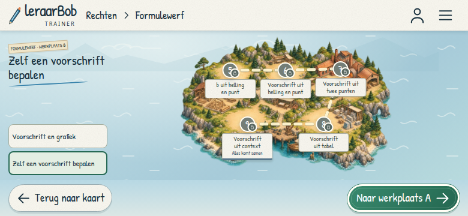

Volgorde 1 → 2 → 3 → 4 en 5 → 6 → 7 → 8 → 9. Klik op een screenshot voor de originele resolutie.
Open werkplaats A · Open werkplaats B · Testrapport
Bij een nieuwe gast is alleen halte 1 beschikbaar als preview. Werkplaats B verwijst daarom naar A. Met beschikbare B-haltes volgt de aanbeveling de voortgang.
1366 × 768 · schone gastvoortgang

780 × 360 · schone gastvoortgang


